1.7 Kubernetes 지원 버전 및 업그레이드
Kubernetes 지원 버전
Kubernetes 버전은 x.y.z로 표현되며, 각각 x는 메이저, y는 마이너, z는 패치 버전을 뜻하며, 오픈소스 Kubernetes도 현재 버전과 그 이전 2개 버전까지를 지원하고 있습니다. OKE 또한 OKE가 지원하는 최신버전 기준, 그 이전 2개의 마이너 버전까지 지원하고 있습니다. 금일자 기준 지원하는 버전은 다음과 같습니다.
- 1.20.11
- 1.19.15
- 1.18.10
신규 버전 출시 후에 30일 동안만 그 이전 버전을 지원하고 있습니다. 예를 들어 OKE에서 1.20.11, 1.19.15가 2021년 10월 8일에 출시되어 기존 버전인 1.20.8, 1.19.12는 각각 30일후인 2021년 11월 7일까지만 지원합니다. 현재 지원 버전은 다음 링크를 참조합니다.
버전 관리 단위
OKE 클러스터는 Control Plane과 Worker Node로 구성되며, Control Plane의 버전이 정해지면, Worker Node는 Control Plane과 같거나 그 이하 버전을 사용할 수 있습니다. 물론 호환되는 내에서 말입니다.
Worker Node는 Node Pool 단위로 버전을 가질 수 있습니다. 여러 Node Pool을 만들어 각각 다른 버전을 가질 수 있습니다.
버전 업그레이드
OKE 새 버전이 출시되면 버전 업그레이드는 다음 절차를 따릅니다.
- Control Plane 업그레이드
- OCI 서비스 콘솔에서 OKE 클러스터 단위를 업그레이드하면 Control Plane만 업그레이드됨
- 오라클이 관리하는 영역으로 다운타임 없이 자동으로 업그레이드 됨
- OKE 클러스터를 업그레이드 하면, 즉 Control Plane이 업그레이드하면 이전 버전으로 다시 다운그레이드 할 수 없음
- Worker Node 업그레이드
- OCI 서비스 콘솔에서 Node Pool 단위로 업그레이드
- 업그레이드 방식
- in-place 업그레이드
- 대상이 되는 기존 Node Pool은 OCI 콘솔에서 버전 업그레이드, 실제 Node가 자동으로 업그레이드 되지 않음
- kubectl drain 명령으로 특정 노드에 신규 컨테이너가 생기는 것을 방지함
- OCI 서비스 콘솔에서 drain한 Node를 종료(Terminate) 시킴
- Node 자가치유에 의해 신규 Node가 자동으로 생성되며, 생성된 신규노드는 Node Pool에서 지정한 업그레이드 된 버전
- 기존 노드에 대해서 순서대로 모두 진행
- out-of-place 업그레이드
- 신규 버전의 Node Pool 추가 생성
- kubectl 명령으로 기존 Node Pool에 있는 Node 제거, Kubernetes에 의해 컨테이너가 모두 이동하면, Node 삭제하는 방식으로 하나씩 진행
- 기존 Node가 모두 제거되면, 기존 Node Pool 삭제
- in-place 업그레이드
Node Pool 단위 버전 혼합
테스트를 위해 1.18.10, 1.19.12, 1.19.15, ,1.20.8, 1.20.11 버전이 사용 가능한 상태에서 1.19.12 버전의 OKE 클러스터를 기준으로 테스트를 진행합니다.
- 테스트 환경
- OKE 클러스터 - oke-cluster-1 버전: 1.19.12
- Control Plane 버전: 1.19.12
- Node Pool - poo1 버전: 1.19.12
-
OKE 클러스터 상세화면으로 이동합니다.
-
왼쪽 아래 Resources > Node Pools 로 이동합니다.
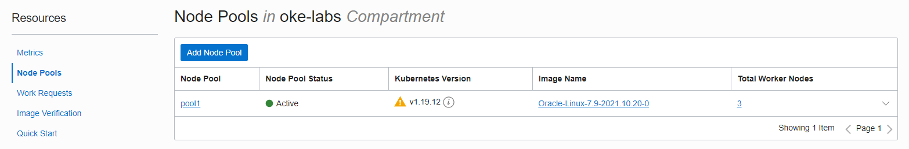
-
현재 pool1이 1.19.12 버전이 있습니다. 추가 Node Pool 생성을 위해 Add Node Pool을 클릭합니다.
-
새 Node Pool 생성을 위한 정보를 입력합니다.
- Name: 새 Node Pool 이름
- Version: 일반 버전 혼합을 확인하기 위해 1.18.10 버전은 선택합니다.
- 사용 가능한 버전을 보면, 현재 OKE 클러스터 버전 이하만 선택 가능한 걸 알 수 있습니다. 현재 OKE 클러스터 생성시 사용 가능한 1.19.15, ,1.20.8, 1.20.11 버전은 보이지 않습니다.
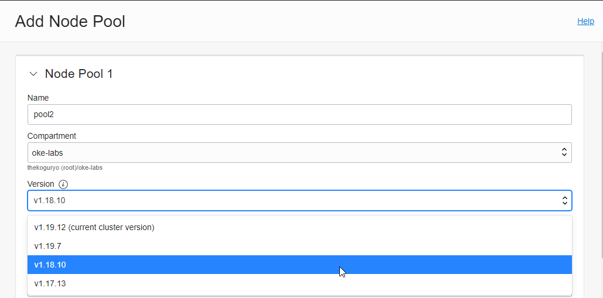
- 처음 생성시와 비슷하게 생성시 필요한 정보를 입력합니다. 다음은 예시입니다.
- Shape: VM.Standard.E3.Flex
- Placement Configuration: Worker Node가 위치한 AD와 Node용 서브넷 지정
- Advanced Options:
- Add an SSH Key: Node에 SSH로 접근하기 위한 Publich Key
-
생성을 요청하면 실제 Node VM이 만들어지고, 준비되는 데 까지 앞서 설치시와 같이 약간의 시간이 걸립니다.
-
Node Pool을 추가 생성하면 그림과 같이 동일 OKE 클러스터에 두 가지 버전의 혼합을 지원하여, 앞서 Node Pool 추가시 본것 처럼 Pool 단위 VM 크기, 위치(AD, 서브넷)을 달리 할 수 있습니다.
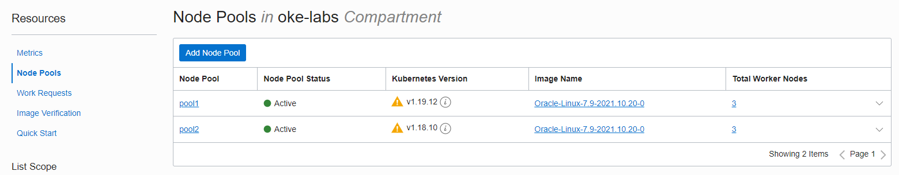
-
kubectl로 노드를 조회해도 동일한 결과가 나옵니다.
oke_admin@cloudshell:~ (ap-seoul-1)$ kubectl get nodes NAME STATUS ROLES AGE VERSION 10.0.10.185 Ready node 23h v1.19.12 10.0.10.226 Ready node 23h v1.19.12 10.0.10.234 Ready node 6m53s v1.18.10 10.0.10.43 Ready node 6m30s v1.18.10 10.0.10.44 Ready node 23h v1.19.12 10.0.10.78 Ready node 6m41s v1.18.10
OKE 클러스터 버전 업그레이드
Control Plane 업그레이드
위와 같이 1.19.12 버전을 사용 중에 새로운 버전이 출시되었다고 가정합니다. 그러면 앞서 설명한 것과 같이 기술지원 정책에 따라 기존 버전은 30일간 지원하기 때문에, 그동안 버전 검증후 업그레이드가 필요합니다.
-
업그레이드가 가능하면, OKE 클러스터 상세 화면에서 Upgrade Available 버튼이 활성화 됩니다.
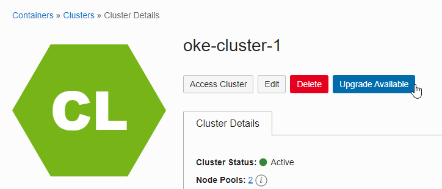
-
Upgrade Available 버튼을 클릭하면 다음과 같이 안내 문구와 함께 업그레이드를 시작할 수 있습니다. 최신 버전인 v1.20.11을 선택하도록 하겠습니다.
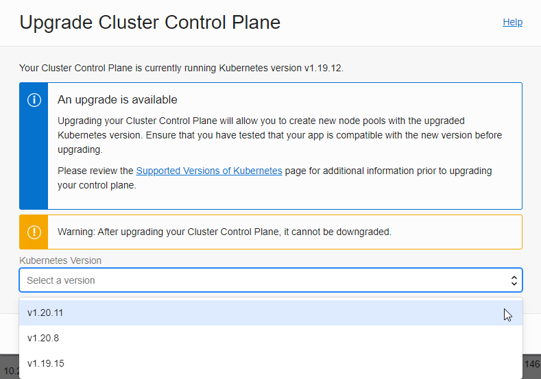
-
버전을 선택하고 아래 Upgrade 버튼을 클릭하여 업그레이드를 시작합니다.
-
클러스터 상태가 UPDATING으로 표시되고 업그레이드가 진행됩니다. 오라클이 관리하는 Control Plane이 내부적으로 순차적으로 업그레이드가 발생합니다. 실제 애플리케이션이 동작하는 Worker Node는 서비스 중지 없이 업그레이드 됩니다.
-
테스트 시점에는 10~15분 후에 업그레이드 완료되었습니다.
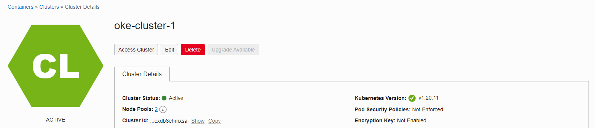
Worker Node 업그레이드 - in-place 업그레이드
OKE 클러스터가 업그레이드로 인해 Control Plane 만 업그레이드 된 상태이며, 이제 Node Pool 단위로 업그레이드 가능한 상태입니다. in-place 업그레이드 방식은 Node Pool 업그레이드 -> 기존 Node Drain > POD 이동 확인 -> 기존 Node VM 종료 순으로 업그레이드 합니다.
Node Pool 업그레이드
-
업그레이드 하려는 Node Pool의 상세 페이지로 이동합니다.
-
수정을 위해 Edit를 클릭하면, 오른쪽에 수정 페이지가 뜹니다.
Version 항목에, 클러스터 버전과 Node Pool의 버전이 표시되며, 업그레이드 가능한 버전이 표시됩니다.
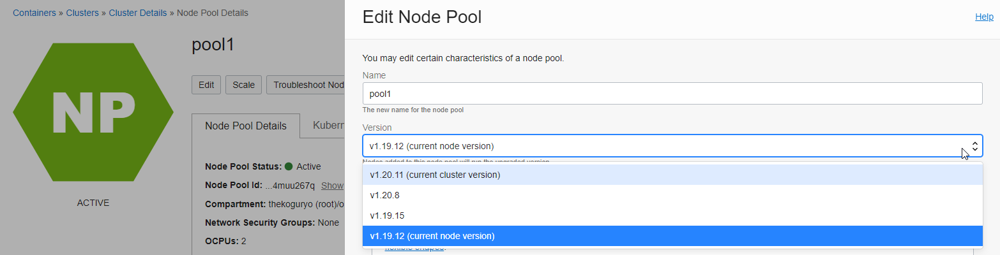
-
클러스터와 동일한 1.20.11로 선택하고 Save Change를 클릭하여 저장합니다.
-
Resources > Work Requests에 가서 보면, 2~3초 뒤에 Node Pool 업그레이드가 완료됩니다.
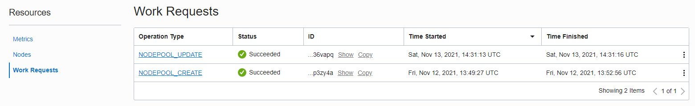
-
아직 실제 Worker Node가 업그레이드 된 것은 아닙니다.
Resources > Nodes에 가서 보면 기존 버전 그대로입니다.
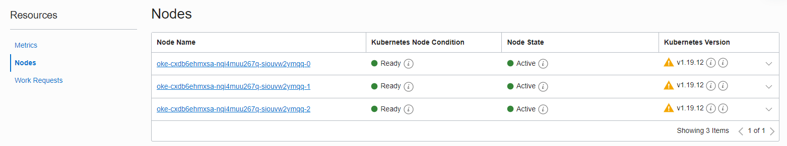
Node Drain 시키기
-
kubectl 명령으로 Worker Node와 배포된 POD를 확인합니다.
oke_admin@cloudshell:~ (ap-seoul-1)$ kubectl get nodes NAME STATUS ROLES AGE VERSION 10.0.10.185 Ready node 24h v1.19.12 10.0.10.226 Ready node 24h v1.19.12 10.0.10.44 Ready node 24h v1.19.12 oke_admin@cloudshell:~ (ap-seoul-1)$ kubectl get pod -o wide NAME READY STATUS RESTARTS AGE IP NODE NOMINATED NODE READINESS GATES nginx-bvs-pvc-7b574c9c5c-b46nd 1/1 Running 0 72m 10.244.1.4 10.0.10.44 <none> <none> nginx-fss-pvc-9fb98454f-5t5bh 1/1 Running 0 39m 10.244.0.137 10.0.10.226 <none> <none> nginx-fss-pvc-9fb98454f-7tsjf 1/1 Running 0 39m 10.244.1.8 10.0.10.44 <none> <none> nginx-fss-pvc-9fb98454f-fzlxj 1/1 Running 0 40m 10.244.0.136 10.0.10.226 <none> <none> -
아래와 같이
kubectl drain <node_name> --ignore-daemonsets명령으로 하나의 노드를 스케줄에서 제외시킵니다.oke_admin@cloudshell:~ (ap-seoul-1)$ kubectl drain 10.0.10.44 --ignore-daemonsets node/10.0.10.44 already cordoned WARNING: ignoring DaemonSet-managed Pods: kube-system/csi-oci-node-7hc28, kube-system/kube-flannel-ds-b4dp6, kube-system/kube-proxy-f8qmp, kube-system/proxymux-client-6qs4x evicting pod default/nginx-fss-pvc-9fb98454f-7tsjf evicting pod default/nginx-bvs-pvc-7b574c9c5c-b46nd pod/nginx-bvs-pvc-7b574c9c5c-b46nd evicted pod/nginx-fss-pvc-9fb98454f-7tsjf evicted node/10.0.10.44 evicted -
아래와 같이 44번 노드가 컨테이너 스케줄링에서 제외된 것을 볼 수 있습니다. POD가 다른 Node로 다 이동한 걸 확인후 다음 작업으로 진행합니다.
oke_admin@cloudshell:~ (ap-seoul-1)$ kubectl get nodes NAME STATUS ROLES AGE VERSION 10.0.10.185 Ready node 25h v1.19.12 10.0.10.226 Ready node 25h v1.19.12 10.0.10.44 Ready,SchedulingDisabled node 25h v1.19.12 oke_admin@cloudshell:~ (ap-seoul-1)$ kubectl get pod -o wide NAME READY STATUS RESTARTS AGE IP NODE NOMINATED NODE READINESS GATES nginx-bvs-pvc-7b574c9c5c-9smhh 1/1 Running 0 3m20s 10.244.0.138 10.0.10.226 <none> <none> nginx-fss-pvc-9fb98454f-5t5bh 1/1 Running 0 45m 10.244.0.137 10.0.10.226 <none> <none> nginx-fss-pvc-9fb98454f-8zkn2 1/1 Running 0 3m20s 10.244.0.6 10.0.10.185 <none> <none> nginx-fss-pvc-9fb98454f-fzlxj 1/1 Running 0 46m 10.244.0.136 10.0.10.226 <none> <none> -
종료할 Node의 노드 이름을 확인합니다.
oke_admin@cloudshell:~ (ap-seoul-1)$ kubectl get nodes -L displayName NAME STATUS ROLES AGE VERSION DISPLAYNAME 10.0.10.185 Ready node 25h v1.19.12 oke-cxdb6ehmxsa-nqi4muu267q-siouvw2ymqq-0 10.0.10.226 Ready node 25h v1.19.12 oke-cxdb6ehmxsa-nqi4muu267q-siouvw2ymqq-1 10.0.10.44 Ready,SchedulingDisabled node 25h v1.19.12 oke-cxdb6ehmxsa-nqi4muu267q-siouvw2ymqq-2 -
Node Pool 상세 화면에서 종료할 노드 이름을 클릭하여 Compute 인스턴스로 이동합니다.
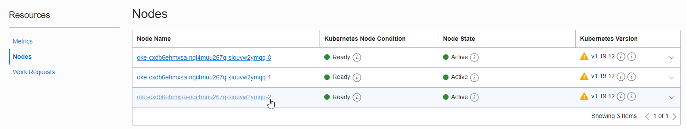
-
Node에 해당되는 Compute 인스턴스를 종료합니다. boot volume도 같이 종료합니다.
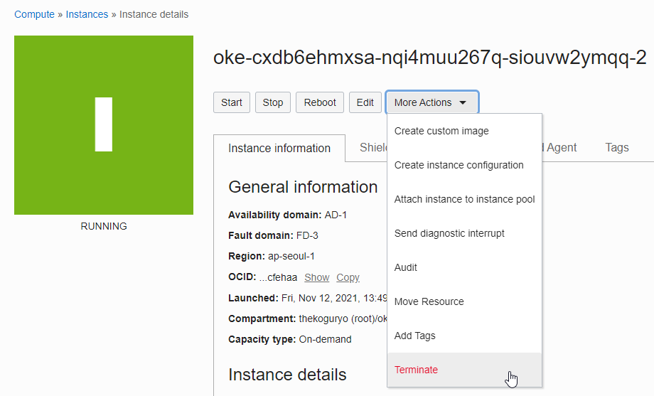
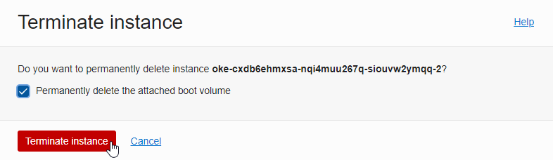
-
Node 자가치유에 의해 신규 Node가 자동으로 생성됩니다. Work Requests를 보면 아래와 같이 재조정(NODEPOLL_RECONCILE) 작업이 발생되어 지정된 갯수에 맞게 노드가 다시 생성됩니다.
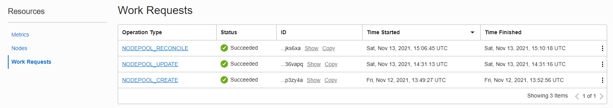
-
생성된 신규노드는 Node Pool에서 지정한 업그레이드 된 버전으로 생성됩니다.
-
kubectl 명령으로 노드를 조회하면, 1.20.2 버전으로 신규 노드가 생성되었습니다. docker 런타임의 deprecate 예정으로 인해 참고로 1.20 부터는 컨테이너 런타임이 cri-o 변경되었습니다.
oke_admin@cloudshell:~ (ap-seoul-1)$ kubectl get nodes -o wide NAME STATUS ROLES AGE VERSION INTERNAL-IP EXTERNAL-IP OS-IMAGE KERNEL-VERSION CONTAINER-RUNTIME 10.0.10.170 Ready node 7m25s v1.20.11 10.0.10.170 <none> Oracle Linux Server 7.9 5.4.17-2102.206.1.el7uek.x86_64 cri-o://1.20.2 10.0.10.185 Ready node 25h v1.19.12 10.0.10.185 <none> Oracle Linux Server 7.9 5.4.17-2102.206.1.el7uek.x86_64 docker://19.3.11 10.0.10.226 Ready node 25h v1.19.12 10.0.10.226 <none> Oracle Linux Server 7.9 5.4.17-2102.206.1.el7uek.x86_64 docker://19.3.11 -
기존 노드에 대해서 순서대로 모두 진행합니다.
-
완료 결과
oke_admin@cloudshell:~ (ap-seoul-1)$ kubectl get nodes -o wide NAME STATUS ROLES AGE VERSION INTERNAL-IP EXTERNAL-IP OS-IMAGE KERNEL-VERSION CONTAINER-RUNTIME 10.0.10.128 Ready node 6m10s v1.20.11 10.0.10.128 <none> Oracle Linux Server 7.9 5.4.17-2102.206.1.el7uek.x86_64 cri-o://1.20.2 10.0.10.146 Ready node 35s v1.20.11 10.0.10.146 <none> Oracle Linux Server 7.9 5.4.17-2102.206.1.el7uek.x86_64 cri-o://1.20.2 10.0.10.170 Ready node 23m v1.20.11 10.0.10.170 <none> Oracle Linux Server 7.9 5.4.17-2102.206.1.el7uek.x86_64 cri-o://1.20.2
Worker Node 업그레이드 - out-of-place 업그레이드
OKE 클러스터가 업그레이드로 인해 Control Plane 만 업그레이드 된 상태이며, 이제 Node Pool 단위로 업그레이드 가능한 상태입니다. out-of-place 업그레이드 방식은 업그레이드 버전의 Node Pool 신규 생성 -> 기존 Node Pool의 모든 노드 Drain -> 기존 Node Pool 삭제 순으로 업그레이드 합니다.
새 버전의 Node Pool 만들기
-
OKE 클러스터 상세 페이지로 이동합니다.
-
Resources > Node Pools 로 이동합니다.
-
그림과 같이 기존 버전의 Node Pool이 있는 상태에서 신규 Node Pool 추가를 위해 Add Node Pool을 클릭합니다.
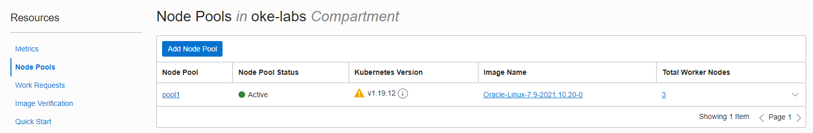
-
신규 Node Pool 정보를 입력하여 생성합니다.
- Name
- Version: 새 버전 선택
- Shape: Node VM 유형
- Number of nodes: 노드 수
- Placement Configuration
- Node가 위치할 AD, Subnet
- Add an SSH key: Node VM에 SSH 접속시 사용할 키의 Private Key
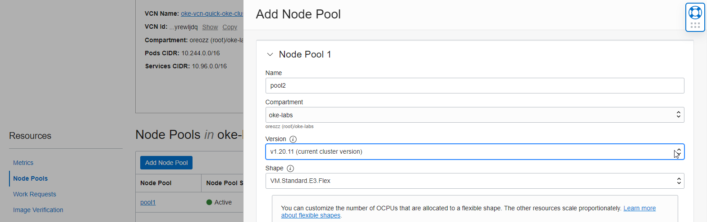
-
추가 된 Node Pool을 OCI 서비스 콘솔 확인할 수 있습니다.
기존 Node Pool의 모든 노드 Drain
-
구동 중인 앱들이 기존 Node Pool에서 동작하고 있습니다.
oke_admin@cloudshell:file-storage (ap-seoul-1)$ kubectl get pod -o wide NAME READY STATUS RESTARTS AGE IP NODE NOMINATED NODE READINESS GATES nginx-bvs-pvc-7b574c9c5c-8jj2d 1/1 Running 0 18m 10.244.0.134 10.0.10.29 <none> <none> nginx-fss-pvc-9fb98454f-2jbp8 1/1 Running 0 18m 10.244.0.5 10.0.10.242 <none> <none> nginx-fss-pvc-9fb98454f-nwqfd 1/1 Running 0 19m 10.244.1.5 10.0.10.61 <none> <none> nginx-fss-pvc-9fb98454f-twx4h 1/1 Running 0 18m 10.244.1.6 10.0.10.61 <none> <none> oke_admin@cloudshell:file-storage (ap-seoul-1)$ kubectl get nodes -L name --sort-by=.metadata.labels.name NAME STATUS ROLES AGE VERSION NAME 10.0.10.242 Ready node 71m v1.19.12 pool1 10.0.10.29 Ready node 71m v1.19.12 pool1 10.0.10.61 Ready node 71m v1.19.12 pool1 10.0.10.12 Ready node 4m25s v1.20.11 pool2 10.0.10.126 Ready node 4m48s v1.20.11 pool2 10.0.10.191 Ready node 4m42s v1.20.11 pool2 -
아래와 같이
kubectl drain <node_name> --ignore-daemonsets명령으로 하나의 노드를 스케줄에서 제외시킵니다.oke_admin@cloudshell:file-storage (ap-seoul-1)$ kubectl drain 10.0.10.242 --ignore-daemonsets node/10.0.10.242 already cordoned WARNING: ignoring DaemonSet-managed Pods: kube-system/csi-oci-node-l62xw, kube-system/kube-flannel-ds-7dv8l, kube-system/kube-proxy-zv4ks, kube-system/proxymux-client-24nmv evicting pod kube-system/coredns-c5d4bf466-wv8fb evicting pod default/nginx-fss-pvc-9fb98454f-2jbp8 evicting pod kube-system/coredns-c5d4bf466-h5rrm pod/coredns-c5d4bf466-wv8fb evicted pod/nginx-fss-pvc-9fb98454f-2jbp8 evicted pod/coredns-c5d4bf466-h5rrm evicted node/10.0.10.242 evicted -
아래와 같이 242번 노드가 컨테이너 스케줄링에서 제외된 것을 볼 수 있습니다. POD가 다른 Node로 다 이동한 걸 확인후 다음 작업으로 진행합니다.
oke_admin@cloudshell:file-storage (ap-seoul-1)$ kubectl get nodes -L name --sort-by=.metadata.labels.name NAME STATUS ROLES AGE VERSION NAME 10.0.10.242 Ready,SchedulingDisabled node 76m v1.19.12 pool1 10.0.10.29 Ready node 76m v1.19.12 pool1 10.0.10.61 Ready node 76m v1.19.12 pool1 10.0.10.12 Ready node 9m15s v1.20.11 pool2 10.0.10.126 Ready node 9m38s v1.20.11 pool2 10.0.10.191 Ready node 9m32s v1.20.11 pool2 oke_admin@cloudshell:file-storage (ap-seoul-1)$ kubectl get pod -o wide NAME READY STATUS RESTARTS AGE IP NODE NOMINATED NODE READINESS GATES nginx-bvs-pvc-7b574c9c5c-8jj2d 1/1 Running 0 22m 10.244.0.134 10.0.10.29 <none> <none> nginx-fss-pvc-9fb98454f-5k8wg 1/1 Running 0 57s 10.244.3.2 10.0.10.126 <none> <none> nginx-fss-pvc-9fb98454f-nwqfd 1/1 Running 0 23m 10.244.1.5 10.0.10.61 <none> <none> nginx-fss-pvc-9fb98454f-twx4h 1/1 Running 0 22m 10.244.1.6 10.0.10.61 <none> <none> -
나머지 기존 Node Pool에 있는 Node들도 drain합니다.
oke_admin@cloudshell:file-storage (ap-seoul-1)$ kubectl get nodes -L name --sort-by=.metadata.labels.name NAME STATUS ROLES AGE VERSION NAME 10.0.10.242 Ready,SchedulingDisabled node 79m v1.19.12 pool1 10.0.10.29 Ready,SchedulingDisabled node 79m v1.19.12 pool1 10.0.10.61 Ready,SchedulingDisabled node 79m v1.19.12 pool1 10.0.10.12 Ready node 11m v1.20.11 pool2 10.0.10.126 Ready node 12m v1.20.11 pool2 10.0.10.191 Ready node 12m v1.20.11 pool2
기존 Node Pool 삭제
-
기존 Node Pool에 있는 모든 Node들이 drain되어 더이상 사용되지 않습니다.
-
OCI 서비스 콘솔에서 OKE 클러스터 상세페이지로 이동합니다.
-
Resources > Node Pools로 이동하여 기존 Node Pool을 삭제합니다.
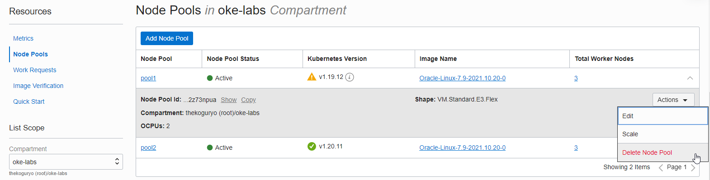
-
업그레이드가 완료되었습니다.
oke_admin@cloudshell:file-storage (ap-seoul-1)$ kubectl get nodes -L name --sort-by=.metadata.labels.name NAME STATUS ROLES AGE VERSION NAME 10.0.10.12 Ready node 18m v1.20.11 pool2 10.0.10.126 Ready node 19m v1.20.11 pool2 10.0.10.191 Ready node 19m v1.20.11 pool2
** 이 글은 개인으로서, 개인의 시간을 할애하여 작성된 글입니다. 글의 내용에 오류가 있을 수 있으며, 글 속의 의견은 개인적인 의견입니다. **